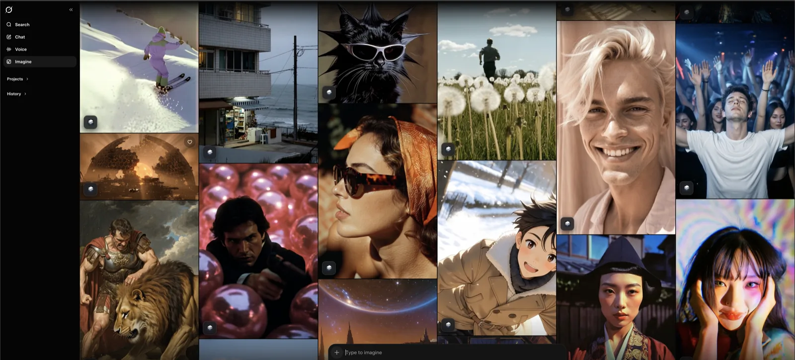
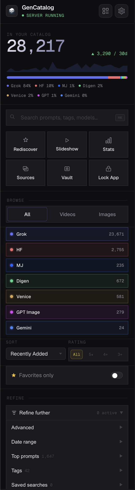
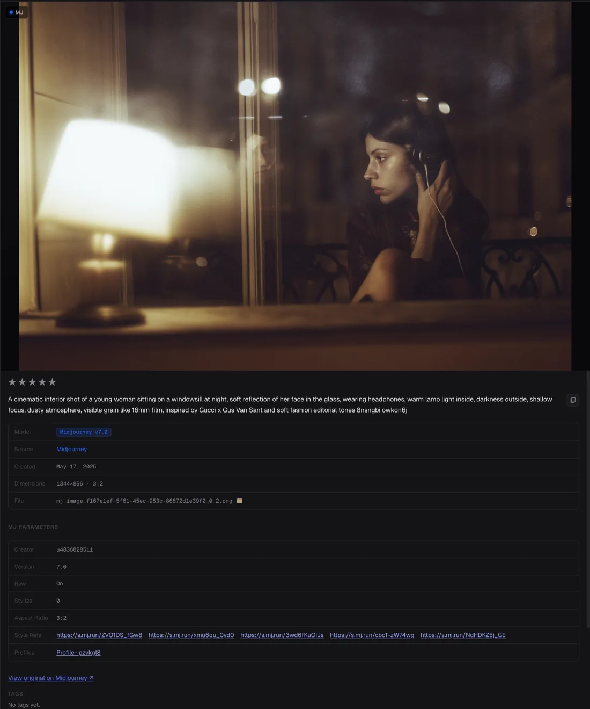
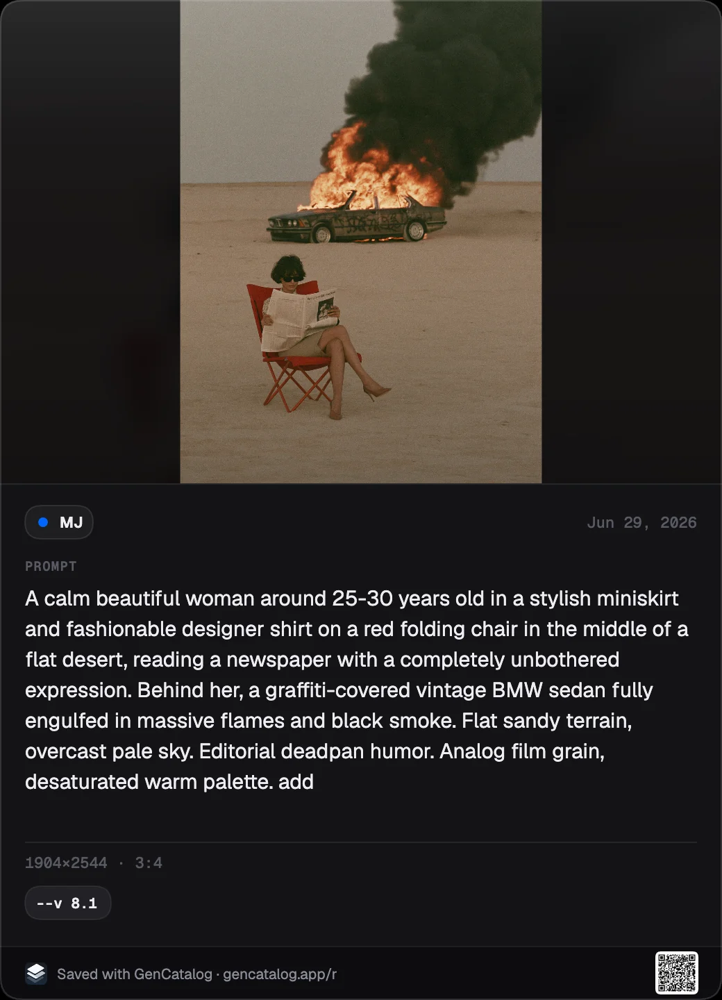
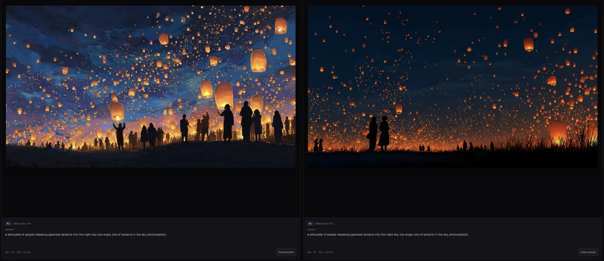
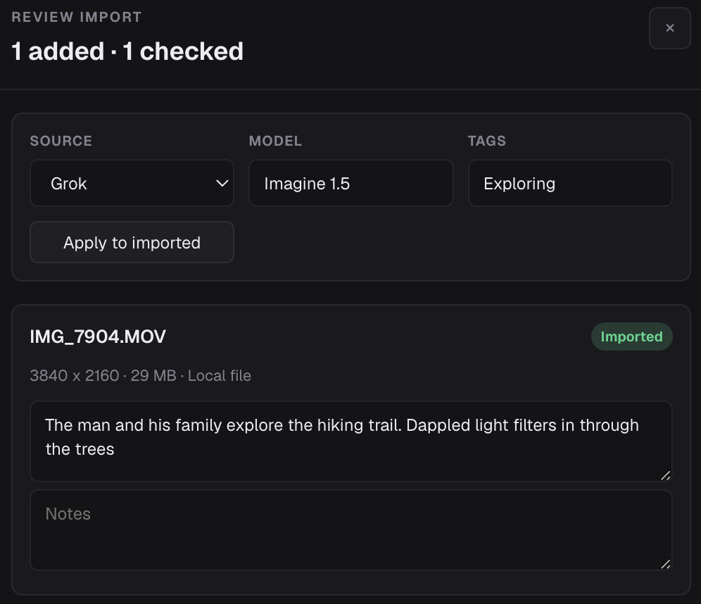

AI generation platforms are creation tools. GenCatalog is your archive.
Making images isn't the problem.
Finding them later is.
GenCatalog keeps the file, prompt, source, and settings together so your best work stays usable, searchable, and yours.
Scattered across platforms
Your best generations sit across different creation sites, browser tabs, and download folders.
One local library brings supported platform saves into a searchable catalog you control.
Prompts lost forever
The image or video survives, but the prompt, model, settings, source, and context disappear.
The full recipe stays attached to the file when the creation site provides it.
No way to find anything
Filenames do not remember what you made, where it came from, or why it mattered.
Search by real context: prompt text, platform, tags, media type, dates, notes, and account.
Save the recipe.
Not just the file.
On supported creation sites, GenCatalog adds a save control where you work. One click captures the image or video with the prompt, settings, metadata, and source link when the site provides them. Local folders are backups; GenCatalog is the layer that makes those backups searchable, traceable, and reusable, with the prompt, source context, account, tags, notes, and media kept together.
- One-click save from the page you are already using.
- The full recipe: prompt, model, settings, metadata, and source link when available.
- Bulk scan — open the extension, hit Scan Library, walk away.

Find the generation you know
you made.
Search thousands of generations by prompt text, tags, models, platforms, filenames, notes, and creator or account fields. Saved searches let you jump back to exactly where you left off.
- Source filters — Grok, Arcana Labs, ComfyUI, Gemini, GPT Image, Rogue Studio, Midjourney, Higgsfield, Digen, Venice.
- Ratings, favorites, notes, tags.
- Advanced — Has Notes, Untagged, Has Prompt.

- Date range, top prompts, source images.
- Saved searches — jump back where you left off.
- Collections — curate without copying.

Every generation, with the recipe that made it.
Prompt, model, version, parameters, dimensions, seed, and source context stay attached as a single reusable unit. Copy it. Re-run it. Tweak it.
- Full prompt text — always readable, never truncated.
- Model + parameters — `--ar`, `--s`, seed, references.
- Source reference — source context stays attached when available.
- Tags & notes — your own structure on top.
When someone asks how you made it, send the recipe.
One click turns a saved image or video frame into a clean card with the prompt and settings beside it. Share the look, hand off the direction, or keep a record of the thing that finally worked.
- Looks good immediately — image, prompt, and settings in one clean card.
- No mystery prompts — the recipe travels with the result.
- You choose what to share — keep private details off the card.

See what one parameter changes.
Pin two generations next to each other. See the prompts, the models, the seeds — the small thing that made one of them sing.

A scanner for your generation history.
The Chrome extension watches the platforms you're already using. Cached, saved, new, deleted — see exactly what's in flight, scan months of history in one pass, no scraping by hand.
- Live counts — cached, saved, new, deleted at a glance.
- One-click bulk scan — pull months of history in one pass.
- Recents list — every save shows up, instantly.
Turn output folders into searchable recipes.
Drag in folders from ComfyUI, API runs, exports, and old downloads. GenCatalog reads embedded ComfyUI prompts, checkpoints, seeds, CFG, samplers, schedulers, denoise values, dimensions, and LoRAs when present, then keeps ordinary images and videos searchable beside everything you capture going forward.
- Recover ComfyUI workflow context from PNG and embedded metadata, including prompts, checkpoints, settings, and LoRA names with weights.
- Import image and video folders from your Mac or Windows PC without changing the tools you already use.
- Keep old work searchable with duplicate checks, source cleanup, tags, notes, and undo for the wrong batch.

The brilliant thing you made ★ a year ago.
Hit Rediscover and a handful of random older generations pop back up. No algorithm, no rankings — just a fun way to wander your own library. Especially great if you've been generating for a while.
Your AI library stays on your machine.
No account. No cloud. No uploads. No subscription holding your work hostage. GenCatalog stores generations in a folder you choose. Your images, videos, prompts, and metadata remain on your own machine, under your control.
Built around your filesystem. Protected on your terms.
GenCatalog saves your library through localhost. Your prompts, images, and videos stay on your computer as local library content. Optional anonymous telemetry, when enabled, sends aggregate event counters only — never your media, prompts, filenames, tags, notes, source URLs, file paths, thumbnails, hashes, or catalog items.
Loved by serious AI creators.
GenCatalog users are managing thousands of AI generations, preserving prompts, and turning messy output folders into searchable local libraries.
I had 12,000+ files to manage and this tool was a godsend. It keeps all original image and video prompts, you can search by keywords, add ratings, add tags, make collections. It’s worth every penny.
The best tool for backing up AI gens, and also amazing for browsing and organizing what you’ve made. I’ve been using this for over a month now and nothing compares.
This tool is indispensible if you’re serious about using any of these GenAI tools for work.
One price. No surprises.
Buy it once. Use it forever. No subscription, no seats, no renewal.
- Free trial — 7 days or 250 generations, whichever comes first
- No credit card required
- Mac and Windows
- Everything stored locally with no cloud uploads
- Chrome extension included
“Worth every penny.”
Find the generation you know you made.
Keep the file, prompt, source, and settings together so you can find the exact image or video later without guessing how you made it.